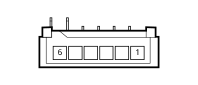

H005B Steering column switch unit(DASHBOARD)
- Path
- Electrical equipment > Connectors > H Manual electrical controls > H005 Steering column switch unit > H005B Steering column switch unit(DASHBOARD)
- Kind
- connector pinout (pin -> wire colour -> other end)
- Applies to
- engines: 2.0 TB, 2.4 20V, 3.0 V6, 2.4 JTD 10V; all production periods
- Interactive page
- https://sloeber94.github.io/elrnDB-lThss/en/#/28005974
Applies to: engines: 2.4 20V; all production periods

Wiring | Colour |
|---|---|
Applies to: engines: 2.0 TB; all production periods
Wiring | Colour |
|---|---|
Applies to: engines: 2.4 JTD 10V; all production periods
Wiring | Colour |
|---|---|
Applies to: engines: 3.0 V6; all production periods
Wiring | Colour |
|---|---|
Topics linked from this page (5)
- 20 dashboard
- C022B Centre dashboard earth(DASHBOARD)
- H005C Steering column switch unit(DASHBOARD)
- M001C Body computer(DASHBOARD)
- M001E Body computer(DASHBOARD)